Electrochemist · Engineer · GLASS Scholar
Junior at NYU Tandon studying Chemical & Biomolecular Engineering. I research electrochemical CO₂ conversion, pulsed electrolysis, and sustainable chemical manufacturing. JACS-published, internationally experienced, and passionate about building a cleaner future through science. I also love to bake, make art, and explore new places.
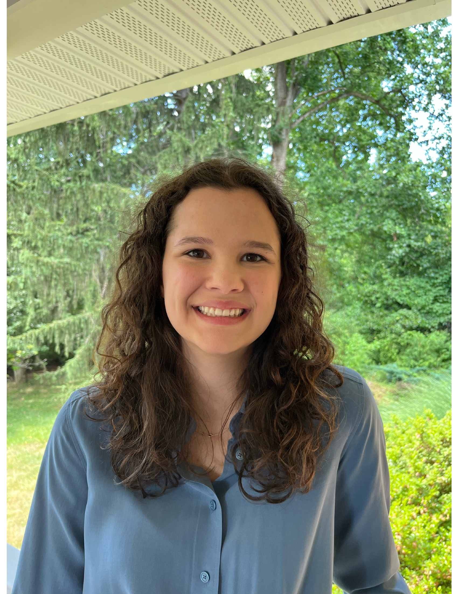
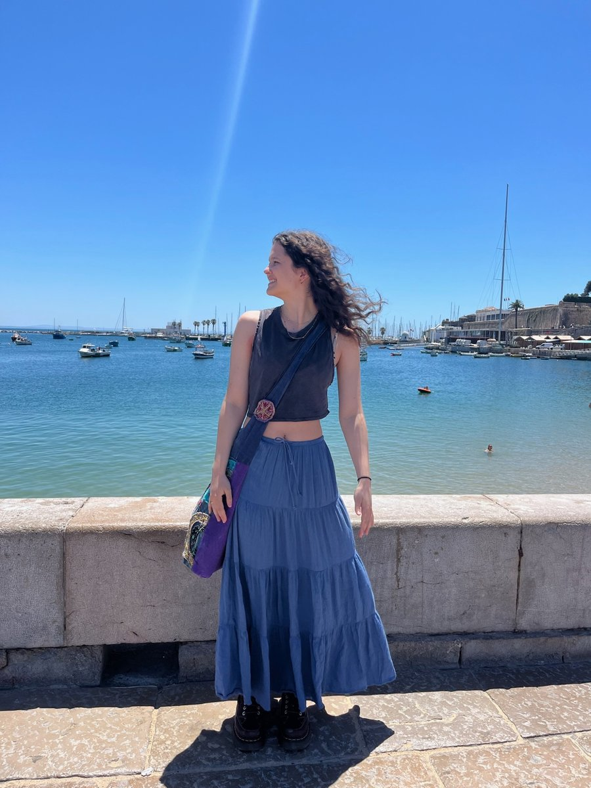
About Me
Hi, I'm Amelia — originally from Columbia, Maryland, now living and studying in Brooklyn, NY. Starting school in New York was a fun change, and I love exploring the city and trying new foods. In my free time I'm usually baking, trying new art hobbies, or planning my next trip.
I'm a junior at NYU Tandon School of Engineering studying Chemical and Biomolecular Engineering. My academic passion is electrochemistry — specifically using electricity from renewable sources to drive chemical reactions that build a more sustainable world.
I'm a proud GLASS Scholar, a program that has taken me to 13+ countries across Europe and Southeast Asia — from Denmark and Vietnam to Lisbon, London, Tallinn, and Mont Blanc. I believe deeply that seeing the world makes you a better scientist and a better person.
Research
Undergraduate Research Abstract · Summer 2025
NYU Tandon Undergraduate Summer Research · Dr. Miguel Modestino's Lab
Renewable energy technologies such as solar and wind present effective pathways for generating green electricity that can drive the electrochemical conversion of CO₂ into ethanol and other C₂+ products. However, integrating such electricity into chemical manufacturing is challenging due to the variable and intermittent nature of renewable power.
This research employed pulsed electrolysis to enable steady-state production using a membrane electrode assembly with a copper electrocatalyst. Pulsed current sequences were applied to hydrated CO₂, alternating between active and resting periods. Products were analyzed to identify pulsing conditions maximizing faradaic efficiency toward ethanol, ethylene, and acetate.
These findings establish a relationship between power input and product selectivity — providing a framework for dynamically controlling electrochemical reactions based on power availability. A key step toward scaling renewable-powered chemical processes for industrial implementation.
Institution
NYU Tandon School of Engineering
Duration
June – August 2025
Focus
Electrochemical CO₂ Reduction · Renewable Energy Integration
Key Method
Pulsed current electrolysis with Cu MEA · GC product analysis
Related Publication
Controlling Selectivity in Electrochemical Conversion — JACS 2025
Read in JACS ↗📄 Peer-Reviewed · Journal of the American Chemical Society
J. Am. Chem. Soc. · 2025
Read the full paper ↗Conference Presentations
Food Waste Biological Conversion into Bioenergy and Bioplastics
American Ecological Engineering Society · Tampa, FL
Bioprocessing of Waste for Bioenergy and Biomaterials for Sustainable Bio-Economy
Symposium on Biomaterials, Fuels & Chemicals · Portland, OR
Research Roles
Feb 2026 – Present
Turnover Labs
Collect and analyze experimental data to support process improvements and report findings to the team. Test and troubleshoot electrolysis system performance to identify areas for optimization.
Jun – Aug 2025
NYU Tandon Summer Research · Dr. Modestino's Lab
Led the REnewEthanol project — optimizing pulsed electrolysis using a copper-based membrane electrode assembly. Developed reaction control strategies enabling large-scale chemical processes to utilize renewable energy. Planning future work converting CO₂ into ethanol.
Feb – Jun 2025
Denmark Technical University — DTU Energy Dept.
Conducted electrochemical experiments under Post-Doc David Tran's guidance. Studied pathways utilizing xylitol, sorbitol, and glycerol. Used Python to plot and analyze cyclic voltammetry data for reaction mechanism studies.
Jan – Dec 2024
NYU Electrochemistry Lab — Dr. Miguel Modestino
Worked directly under PhD student Ricardo Mathison. Programmed and operated Opentron's pipetting robot. Ran electrochemical experiments with Acrylonitrile and Crotononitrile in the Paradox reactor. Contributed to JACS 2025 publication.
Jun 2022 – Aug 2023
University of Maryland — Dr. Stephanie Lansing's Environmental Science Lab
Researched conversion of food waste into biofuels and bioplastics. Collected and analyzed samples using filtering, acidification, COD testing, and solids testing. Co-authored two conference presentations at national symposia.
Education
Tandon School of Engineering
Brooklyn, New York
B.S. Chemical & Biomolecular Engineering
Expected Graduation: May 2027
3.7
GPA / 4.0
Chemical & Biomolecular Engineering Core
Core curriculum covering reaction engineering, transport phenomena, thermodynamics, and materials science with a focus on electrochemistry and sustainable processes.
Strategic Analysis & Economics for Engineers
Coursework in Strategy Development and Economics — building the business and systems thinking perspective needed to translate research into real-world impact.
Python & Data Analysis
Applied Python for data visualization and analysis — used in cyclic voltammetry studies at DTU and electrochemical experiments at NYU Modestino Lab.
GLASS Honors Program
Three-year leadership development program with international study (Denmark, Vietnam) and professional development through the five GLASS Windows framework.
NYU WoMentorship Program
Active mentor since September 2025, supporting underclassmen navigating the challenges of being a woman in STEM.
Society of Women Engineers — SWE Conference 2024
Attended the annual SWE conference in Chicago — met company representatives, attended professional panels, and built a lasting network.
Global Leaders & Scholars in STEM
Global Leaders and Scholars in STEM (GLASS) is a rigorous three-year honors program at NYU Tandon that brings together high-achieving undergraduates with the potential to become global leaders in innovation, technology, research, and entrepreneurship.
As a GLASS Scholar, I've pursued experiences across all five program "windows" — building global competency through international study in Denmark and Vietnam, deepening academic excellence through published research, and giving back through service and mentorship.
GLASS scholars focus on the Tandon Impact Areas and the lens of the UN Sustainable Development Goals — a framework that resonates deeply with my work in renewable energy. This website serves as my official GLASS professional portfolio, completed in Year Three of the program.
The program provided annual funding for research, academics, and professional development — enabling me to attend SWE, conduct summer research, and grow as both a scientist and a leader.
The 5 GLASS Windows
Global Competency
Semester abroad, international internships, short-term global experiences
Commitment to Service
Service learning, community engagement, alternative break trips
Leadership Development
Team projects, mentoring, student club leadership positions
Academic Excellence
Thesis, senior design, VIP projects, published research
Professional Development
Internships, research roles, conference attendance
Global Competency
Denmark Technical University · Spring 2025 · 13+ Countries
During the spring semester of my sophomore year, I studied abroad at DTU, meeting people from many countries and conducting research in DTU's Energy Department under Post-Doc David Tran. Using Copenhagen as a base, GLASS helped me travel to 13+ countries across Europe — from Lisbon to Tallinn, Mont Blanc to Dublin. See the map and photos below.
Global Competency
VinUniversity, Hanoi + Ha Long Bay · January 2026
During January term in my junior year, I studied abroad in Vietnam at VinUniversity in Hanoi for two weeks. I immersed in Vietnamese culture — learning traditional crafts, exploring Ha Long Bay, and gaining a new technical skill in digital twin models for the city of Hanoi, expanding my toolkit into urban systems and smart city modeling.
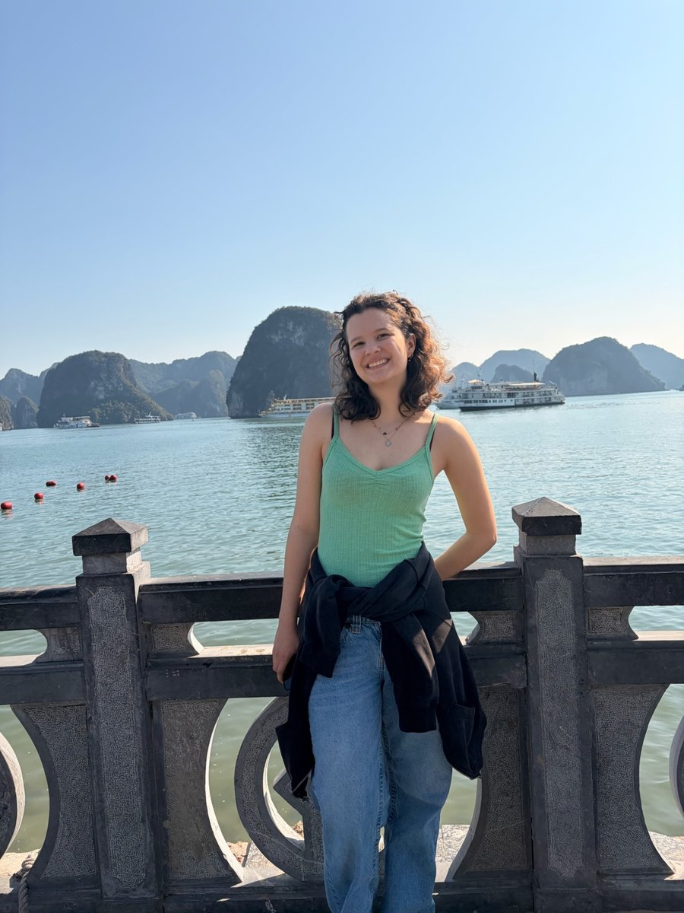
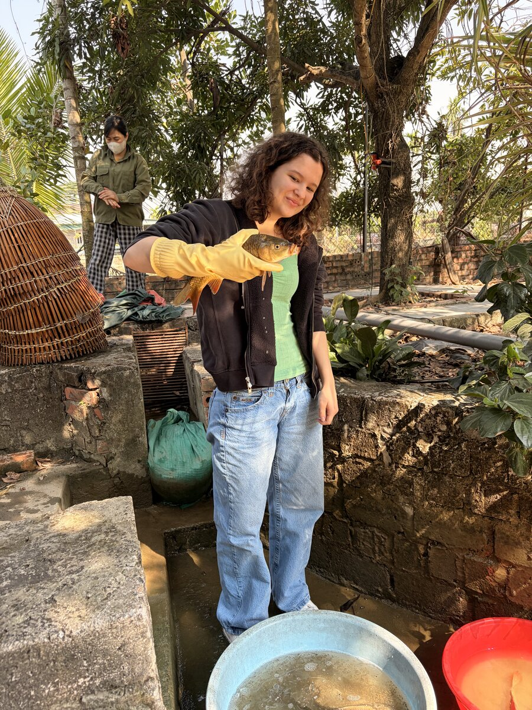
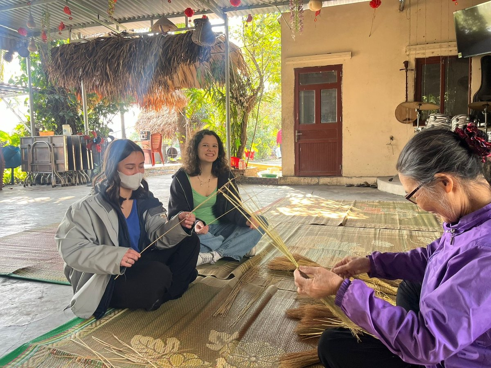
Academic Excellence
Dr. Modestino's Group · Jan 2024 – Present
Beginning in the spring of my freshman year, I've worked in Dr. Modestino's group under PhD student Ricardo Mathison. I programmed Opentron's pipetting robot, ran experiments with Acrylonitrile and Crotononitrile, and contributed to a JACS 2025 publication.
Professional Development
Society of Women Engineers · Chicago, IL · 2024
My first professional conference. I met company representatives from across the US, made friends with fellow attendees, and attended panels on succeeding in engineering. I came home with tools to build my professional skills and a lasting sense of community.
Leadership Development
NYU Tandon · September 2025 – Present
As a mentor in the WoMentorship Program, I provide strategies to underclassmen navigating challenges unique to women in STEM. Drawing on my own journey through research, study abroad, and professional development, I help the next generation find their footing.
Academic Excellence
NYU Tandon · June – August 2025
Led the REnewEthanol project using pulsed electrolysis and a copper MEA to develop reaction control strategies for renewable-powered chemical manufacturing — directly aligned with UN SDGs on clean energy and sustainable industry.
Denmark Technical University · Spring 2025 · Copenhagen as home base
15
Cities visited
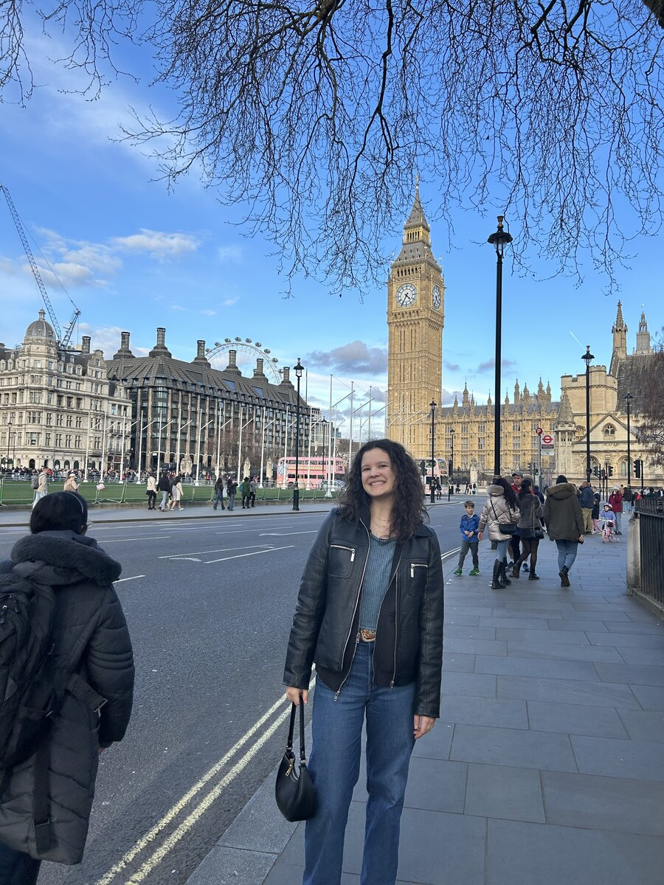
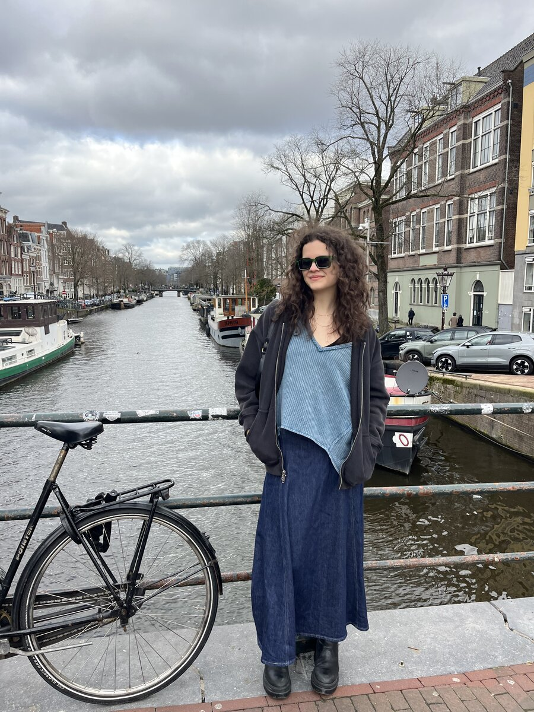
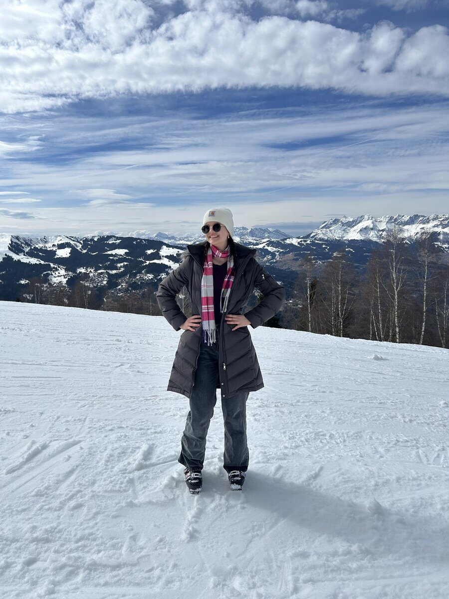
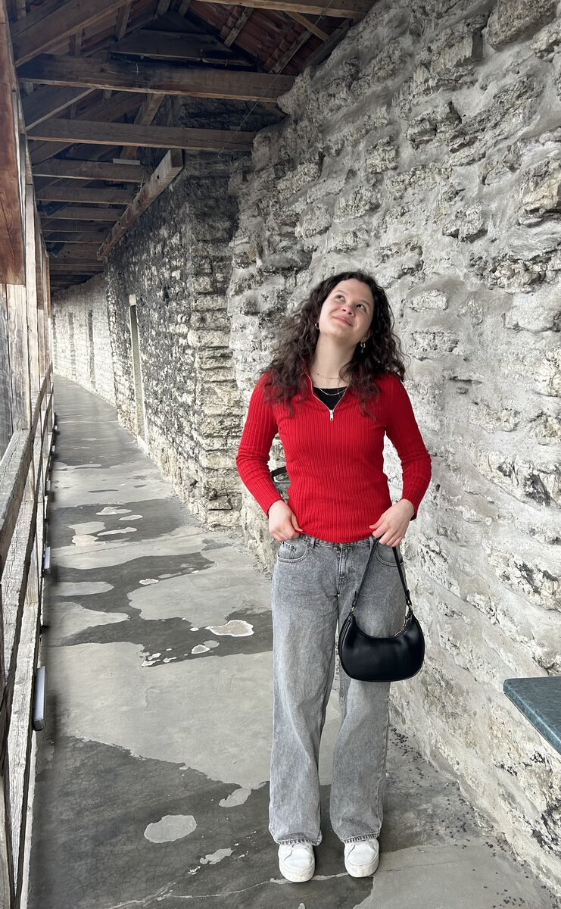
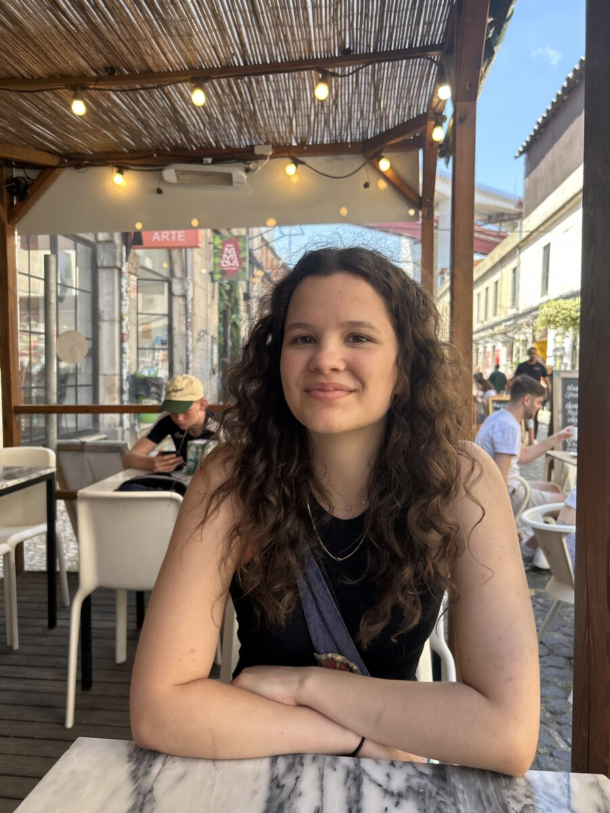
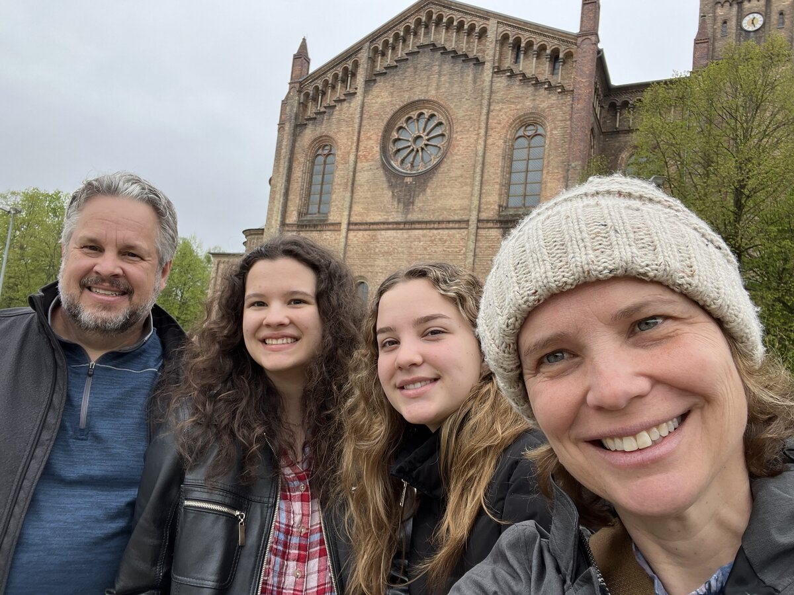
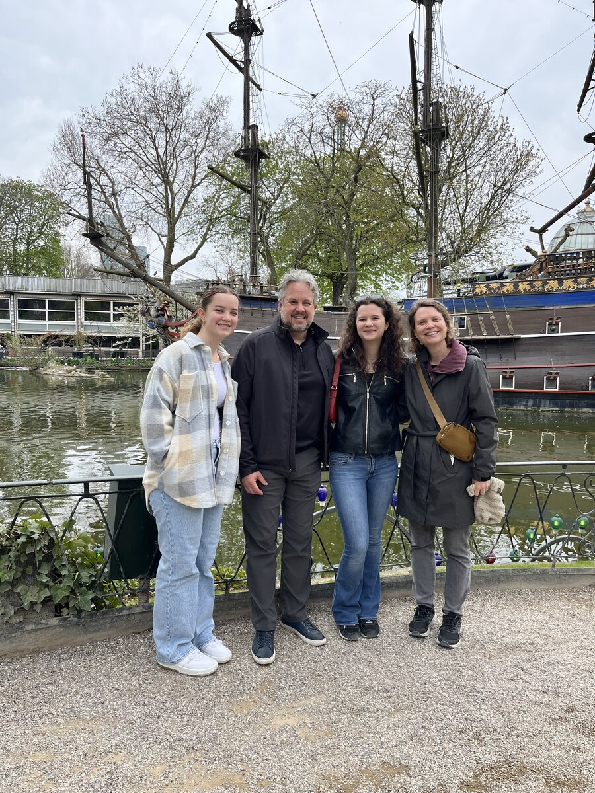
Contact
Open to research collaborations, internships, and conversations about electrochemistry, renewable energy, or sustainable engineering. Always happy to hear from fellow scientists and curious minds.